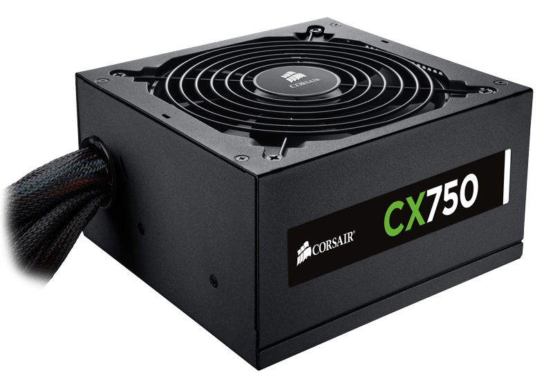

Witamy w Świat Komputerów!
Informacje o kartach graficznych
Zasilacz, jak sama nazwa wskazuje, jest źródłem zasilania obwodu elektronicznego . Większość obwodów elektronicznych działa na prąd stały, ponieważ przetwarzają sygnały AC lub DC. Najpopularniejszym zasilaczem jest ten, który pobiera prąd ze standardowego gniazdka ściennego AC, które dostarcza 120 V przy 60 Hz.